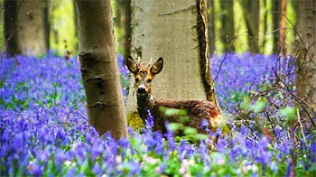
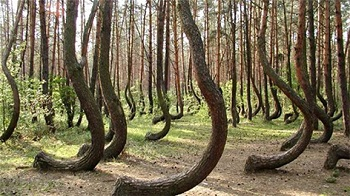
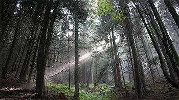
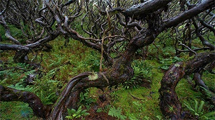

Seconda Prova
Indica quale tra queste foreste si trova in Polonia!
inserisci il nome nella casella sottostante
|  |  |
|
Foresta di Hallerbos |
Foresta Storta |
|  |  |
|
Foresta Nera |
Rata Forest |
"Presentazione della foresta"
È stata soprannominata “foresta storta”, crooked forest, e si trova in Polonia, poco fuori il paese di Nowe Czarnowo. È un bosco di un centinaio di alberi, perlopiù pini, piantati negli anni Trenta del Novecento. La loro caratteristica è proprio quella di essere cresciuti tutti con il tronco curvo con la concavità rivolta verso Nord “come in una sorta di inchino”.